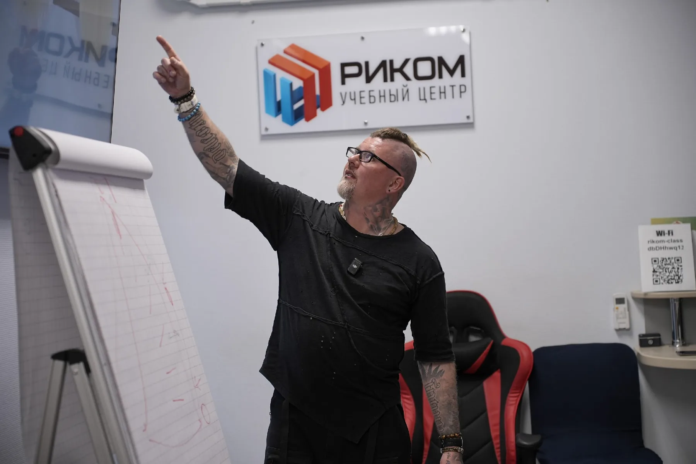

Студентам
Чтобы с самого начала понимать логику цвета, морфологии и каркасов, а не работать по случайным схемам.

Практический курс · Барнаул
29–30 августа 2026
Оптика, морфология и разные типы каркасов — в одной системе работы с керамикой.
На практике каждый участник изготовит три единицы
и применит принципы T.O.N.

Даже сильная техника не даёт предсказуемый результат без понимания оптики, морфологии и материала.
T.O.N. — это система, которая объясняет, почему керамика выглядит именно так.
Чтобы с самого начала понимать логику цвета, морфологии и каркасов, а не работать по случайным схемам.
Чтобы сделать результат более предсказуемым и уверенно работать с разными конструкциями и материалами.
Чтобы систематизировать опыт, пересобрать подход к керамике и по-новому посмотреть на привычную работу.
Результат зависит не только от техники нанесения, но и от понимания оптики, морфологии, цвета и конструкции.
На курсе эти элементы разбираются как части одной системы — от восприятия цвета до практической работы.
Разобрать, что формирует оптические свойства зубов.
Понять связь внутренней и поверхностной морфологии с итоговым результатом.
Переосмыслить яркость, транспарентность, хроматичность и ошибки определения цвета.
Разобрать дизайн каркасов на принципах T.O.N. для разных материалов.
Изготовить три единицы и применить принципы метода в работе.

Зубной техник · автор метода T.O.N. «Новая Оптическая Теория» · основатель dpb
20 лет практики · более 13 лет развития и применения T.O.N.
Основа метода — знания, собранные и проанализированные более чем на 150 курсах для керамистов по всему миру.
В фокусе Сергея — морфология, цвет, оптика, эстетические реставрации и работа с различными каркасными материалами.
T.O.N. соединяет биологию, оптическую физику, материаловедение и практический опыт в единую систему работы с керамикой.
Практический день построен так, чтобы каждый участник не только понял принципы T.O.N., но и применил их в собственной работе.
Оборудование, инструменты и материалы для практики предоставляет dpb и входят в стоимость курса.
Группа — до 20 участников.

29 августа — теория · 15:00–18:00
30 августа — практика · 10:00–18:00
Эстетика начинается не с готовой схемы, а с понимания оптики, формы и материала.
Оптика


Теория 29 августа и практика 30 августа.
Самостоятельное изготовление трёх единиц под руководством преподавателя.
Всё необходимое предоставляется на время курса.
Оптика, морфология, цвет, каркасы и практические решения.
Титан, диоксид циркония и дисиликат лития.
Керамика, используемая в практической части.
После прохождения курса каждый участник получает сертификат.
Обед во второй день курса входит в стоимость участия.
После обучения каждый участник получает сертификат dpb.
прошёл(а) образовательную программу
По вопросам курса и практической части участники могут обратиться к команде dpb.
Да. Курс подойдёт студентам профильных направлений, начинающим и практикующим специалистам.
Нет. Курс рассчитан на разный уровень подготовки.
Нет. С керамикой VITA LUMEX AC участники будут работать непосредственно во время практической части.
Каждый участник самостоятельно изготовит три единицы на разных типах каркасов.
Нет. Всё необходимое для практической части предоставляет dpb.
Да. Во второй день курса для участников предусмотрен обед.
Да. После прохождения курса каждый участник получает сертификат dpb.
Нет. НМО для этого курса не предусмотрено.
Оставьте заявку на сайте. Координатор dpb свяжется с вами и поможет с регистрацией.
Координатор dpb свяжется с вами, ответит на вопросы и поможет забронировать место.